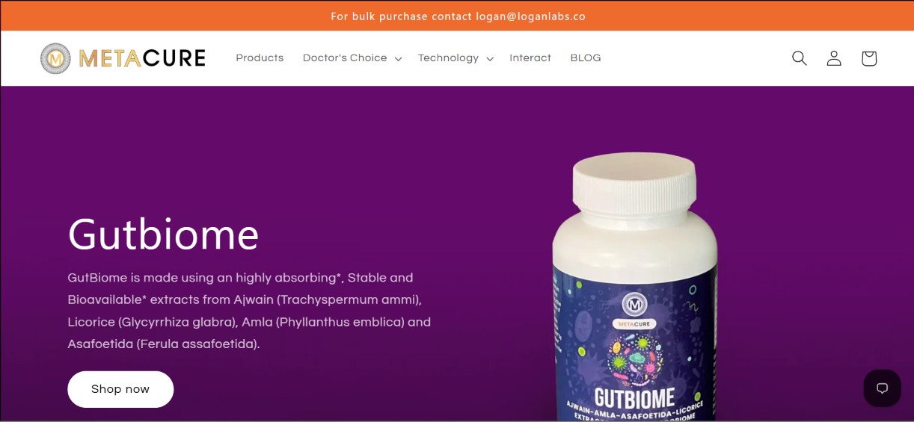
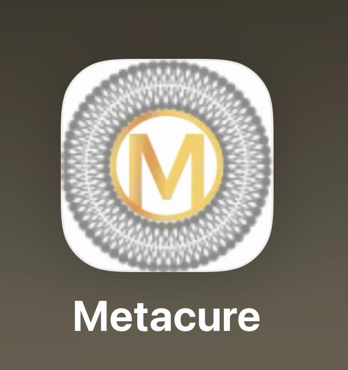
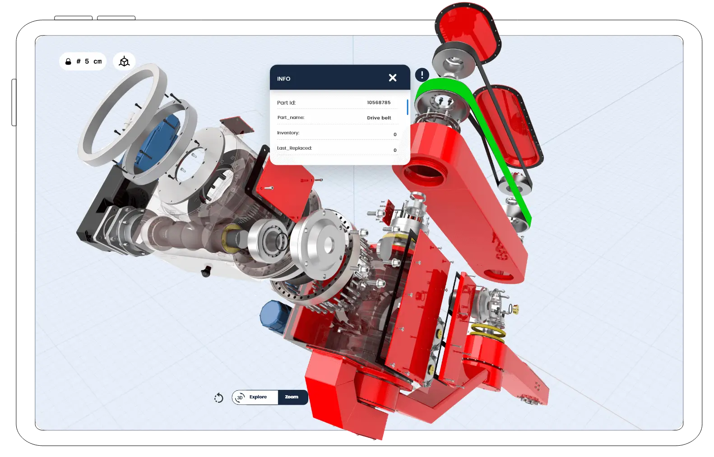
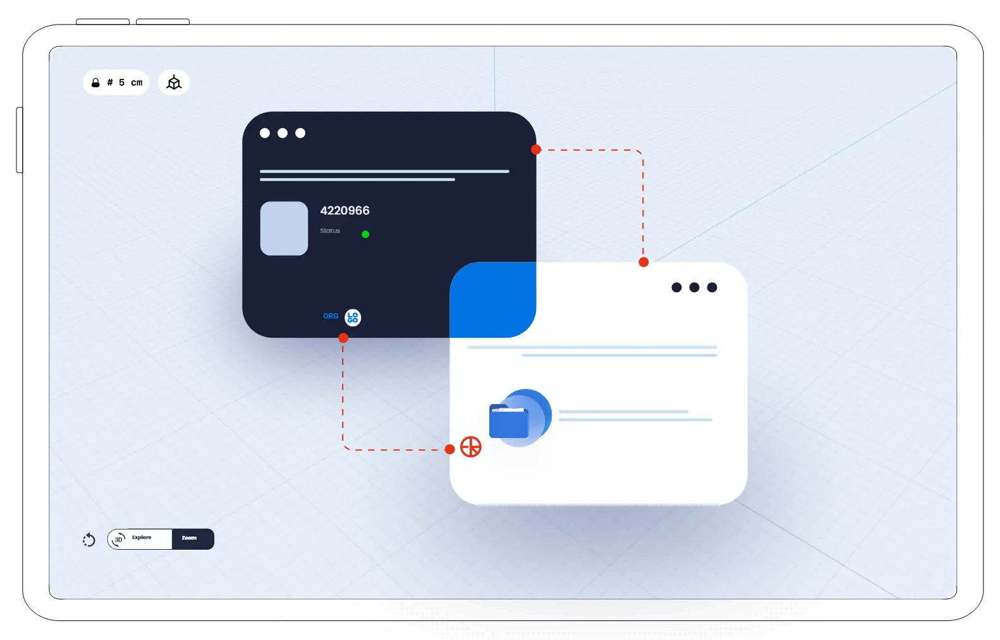

I am a current Computer Science B.S. student attending University of California, Riverside. My educational experience is geared heavily towards software engineering. I have taken many courses that have prepared me for an entry in the software engineering industry. I have a great understanding of Algorithms and Data Structures. In addition, I have some introductory experience in working with Artificial Intelligence through some of my courses. I have studied compiler design and computer architecture, gaining a good understanding of the topics. I have also studied parallel systems, concurrent programming, and embedded systems. All these courses and topics have prepared me to enter different aspects of software engineering professionally. I am currently taking courses in software testing and data science ethics.
I also have some experience working in software development in a professional setting. I have worked as an intern in a Biotechnology company, assisting in the development of an automated COVID-19 detection software that reads samples provided by patients to determine if they have the virus. This was some of the first experience I gained from a company. I learned how to work with image recognition software, like ImageJ, a java based software that is used to analyze images digitally.
Some of my later experience was gained at a software development company. I worked as an intern there. I started off doing research for the company and assisting various employees and developers with their tasks and projects. This research involved analyzing large language models, 3D generation software, and practical applications of augmented reality in maintenance. I am working towards creating 3D software that can work in tandem with virtual meetings, like Zoom or Teams.
I am looking for experience that can broaden my knowledge and experience in working with different forms of software development and computer science. I am interested in learning how to apply everything I have learned into real world applications. I also wish to gain experiences that can teach me new subjects that can not be easily taught in the classroom as well. I hope to work under experienced professionals who can give me unique perspectives and understanding of these topics.
I am also working towards a Masters in Robotics, also at the University of Riverside California. I am planning to focus my masters in the software side of robotics, such as machine learning and artificial intelligence. I am looking for opportunities that can enable me to gain unique experiences and work on practical applications of my future studies.
• Working on military equipment repair tool combining artificial intelligence and AR-tools
• Testing on LLMs and NPLs
• Assisted in Analysis of 3D AI models
• Assisted in research towards Role Based Access Controls
• Managed company website: metacure.us
• Worked on mobile app designed for tele-health in congruence with company products
• Secure Log-In, Notifications, adjusted tele-health plan
• Performed RT-LAMP and RT-PCR Rapid COVD-19 assays for saliva and swab samples
• Used MRI scanner for large scale sample screening
• Developed program to process MRI and E-Gel images using ImageJ



